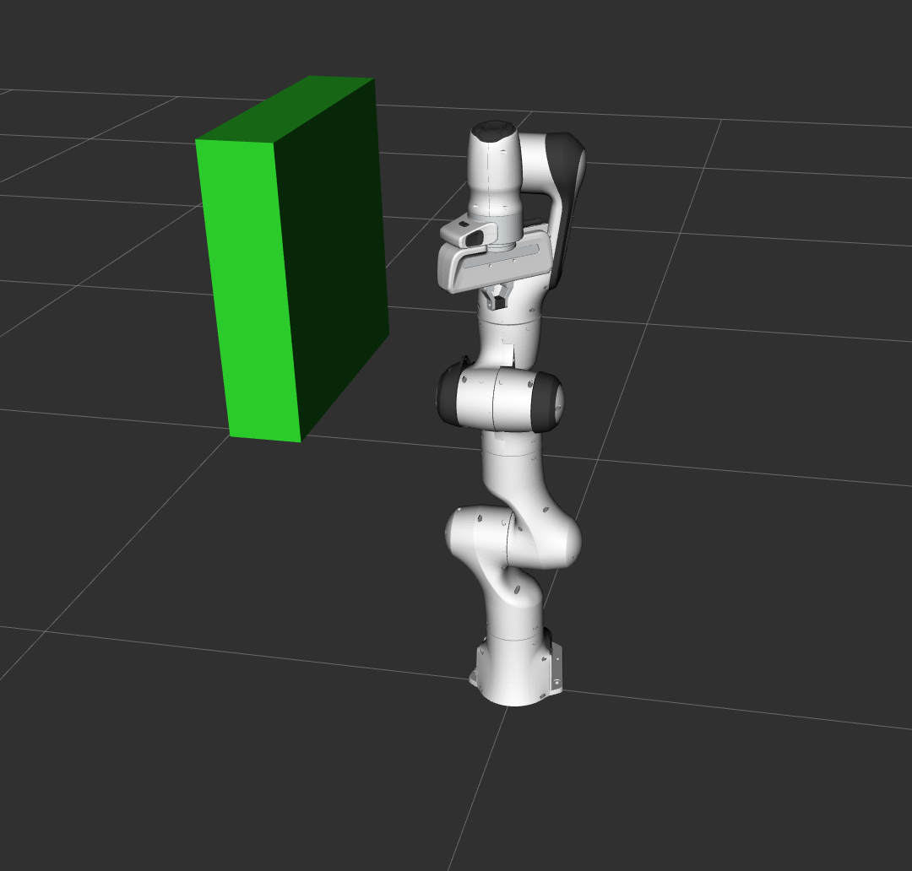
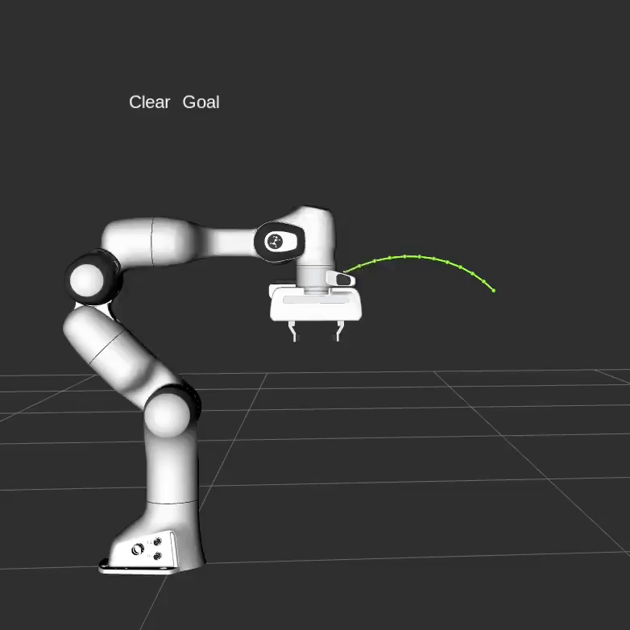
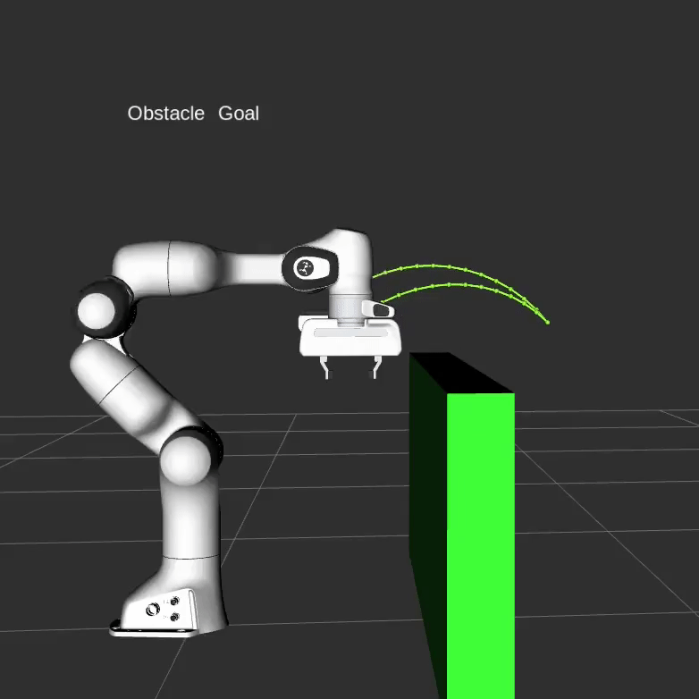
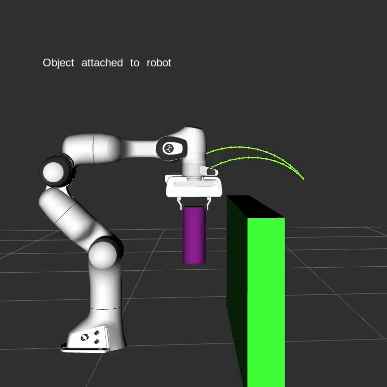

Move Group C++ Interface

In MoveIt, the simplest user interface is through the MoveGroupInterface class. It provides easy to use functionality for most operations that a user may want to carry out, specifically setting joint or pose goals, creating motion plans, moving the robot, adding objects into the environment and attaching/detaching objects from the robot. This interface communicates over ROS topics, services, and actions to the MoveGroup node.
Watch this quick YouTube video demo to see the power of the move group interface!
Getting Started
If you haven’t already done so, make sure you’ve completed the steps in Getting Started.
Running the Code
Open two shells. In the first shell, start RViz and wait for everything to finish loading:
ros2 launch moveit2_tutorials move_group.launch.py
In the second shell, run the launch file:
ros2 launch moveit2_tutorials move_group_interface_tutorial.launch.py
After a short moment, the RViz window should appear and look similar to the one at the top of this page. To progress through each demo step either press the Next button in the RvizVisualToolsGui panel at the bottom of the screen or select Key Tool in the Tools panel at the top of the screen and then press 0 on your keyboard while RViz is focused.
Expected Output
- See the YouTube video at the top of this tutorial for expected output. In RViz, we should be able to see the following:
The robot moves its arm to the pose goal to its front.
The robot moves its arm to the joint goal at its side.
The robot moves its arm back to a new pose goal while maintaining the end-effector level.
The robot moves its arm along the desired Cartesian path (a triangle down, right, up+left).
The robot moves its arm to a simple goal with no objects in the way.
A box object is added into the environment to the right of the arm. 
The robot moves its arm to the pose goal, avoiding collision with the box.
The object is attached to the wrist (its color will change to purple/orange/green).
The robot moves its arm with the attached object to the pose goal, avoiding collision with the box.
The object is detached from the wrist (its color will change back to green).
The object is removed from the environment.
The Entire Code
The entire code can be seen here in the MoveIt GitHub project. Next, we step through the code piece by piece to explain its functionality.
Setup
MoveIt operates on sets of joints called “planning groups” and stores them in an object called
the JointModelGroup. Throughout MoveIt, the terms “planning group” and “joint model group”
are used interchangeably.
static const std::string PLANNING_GROUP = "panda_arm";
The MoveGroupInterface class can be easily set up using just the name of the planning group you would like to control and plan for.
moveit::planning_interface::MoveGroupInterface move_group(move_group_node, PLANNING_GROUP);
We will use the PlanningSceneInterface class to add and remove collision objects in our “virtual world” scene
moveit::planning_interface::PlanningSceneInterface planning_scene_interface;
Raw pointers are frequently used to refer to the planning group for improved performance.
const moveit::core::JointModelGroup* joint_model_group =
move_group.getCurrentState()->getJointModelGroup(PLANNING_GROUP);
Visualization
namespace rvt = rviz_visual_tools;
moveit_visual_tools::MoveItVisualTools visual_tools(move_group_node, "panda_link0", "move_group_tutorial",
move_group.getRobotModel());
visual_tools.deleteAllMarkers();
/* Remote control is an introspection tool that allows users to step through a high level script */
/* via buttons and keyboard shortcuts in RViz */
visual_tools.loadRemoteControl();
RViz provides many types of markers, in this demo we will use text, cylinders, and spheres
Eigen::Isometry3d text_pose = Eigen::Isometry3d::Identity();
text_pose.translation().z() = 1.0;
visual_tools.publishText(text_pose, "MoveGroupInterface_Demo", rvt::WHITE, rvt::XLARGE);
Batch publishing is used to reduce the number of messages being sent to RViz for large visualizations
visual_tools.trigger();
Getting Basic Information
We can print the name of the reference frame for this robot.
RCLCPP_INFO(LOGGER, "Planning frame: %s", move_group.getPlanningFrame().c_str());
We can also print the name of the end-effector link for this group.
RCLCPP_INFO(LOGGER, "End effector link: %s", move_group.getEndEffectorLink().c_str());
We can get a list of all the groups in the robot:
RCLCPP_INFO(LOGGER, "Available Planning Groups:");
std::copy(move_group.getJointModelGroupNames().begin(), move_group.getJointModelGroupNames().end(),
std::ostream_iterator<std::string>(std::cout, ", "));
Start the demo
visual_tools.prompt("Press 'next' in the RvizVisualToolsGui window to start the demo");
Planning to a Pose goal
We can plan a motion for this group to a desired pose for the end-effector.
geometry_msgs::msg::Pose target_pose1;
target_pose1.orientation.w = 1.0;
target_pose1.position.x = 0.28;
target_pose1.position.y = -0.2;
target_pose1.position.z = 0.5;
move_group.setPoseTarget(target_pose1);
Now, we call the planner to compute the plan and visualize it. Note that we are just planning, not asking move_group to actually move the robot.
moveit::planning_interface::MoveGroupInterface::Plan my_plan;
bool success = (move_group.plan(my_plan) == moveit::core::MoveItErrorCode::SUCCESS);
RCLCPP_INFO(LOGGER, "Visualizing plan 1 (pose goal) %s", success ? "" : "FAILED");
Visualizing plans
We can also visualize the plan as a line with markers in RViz.
RCLCPP_INFO(LOGGER, "Visualizing plan 1 as trajectory line");
visual_tools.publishAxisLabeled(target_pose1, "pose1");
visual_tools.publishText(text_pose, "Pose_Goal", rvt::WHITE, rvt::XLARGE);
visual_tools.publishTrajectoryLine(my_plan.trajectory_, joint_model_group);
visual_tools.trigger();
visual_tools.prompt("Press 'next' in the RvizVisualToolsGui window to continue the demo");
Moving to a pose goal
Moving to a pose goal is similar to the step above
except we now use the move() function. Note that
the pose goal we had set earlier is still active
and so the robot will try to move to that goal. We will
not use that function in this tutorial since it is
a blocking function and requires a controller to be active
and report success on execution of a trajectory.
/* Uncomment below line when working with a real robot */
/* move_group.move(); */
Planning to a joint-space goal
Let’s set a joint space goal and move towards it. This will replace the pose target we set above.
To start, we’ll create an pointer that references the current robot’s state. RobotState is the object that contains all the current position/velocity/acceleration data.
moveit::core::RobotStatePtr current_state = move_group.getCurrentState(10);
Next get the current set of joint values for the group.
std::vector<double> joint_group_positions;
current_state->copyJointGroupPositions(joint_model_group, joint_group_positions);
Now, let’s modify one of the joints, plan to the new joint space goal, and visualize the plan.
joint_group_positions[0] = -1.0; // radians
move_group.setJointValueTarget(joint_group_positions);
We lower the allowed maximum velocity and acceleration to 5% of their maximum. The default values are 10% (0.1). Set your preferred defaults in the joint_limits.yaml file of your robot’s moveit_config or set explicit factors in your code if you need your robot to move faster.
move_group.setMaxVelocityScalingFactor(0.05);
move_group.setMaxAccelerationScalingFactor(0.05);
success = (move_group.plan(my_plan) == moveit::core::MoveItErrorCode::SUCCESS);
RCLCPP_INFO(LOGGER, "Visualizing plan 2 (joint space goal) %s", success ? "" : "FAILED");
Visualize the plan in RViz:
visual_tools.deleteAllMarkers();
visual_tools.publishText(text_pose, "Joint_Space_Goal", rvt::WHITE, rvt::XLARGE);
visual_tools.publishTrajectoryLine(my_plan.trajectory_, joint_model_group);
visual_tools.trigger();
visual_tools.prompt("Press 'next' in the RvizVisualToolsGui window to continue the demo");
Planning with Path Constraints
Path constraints can easily be specified for a link on the robot. Let’s specify a path constraint and a pose goal for our group. First define the path constraint.
moveit_msgs::msg::OrientationConstraint ocm;
ocm.link_name = "panda_link7";
ocm.header.frame_id = "panda_link0";
ocm.orientation.w = 1.0;
ocm.absolute_x_axis_tolerance = 0.1;
ocm.absolute_y_axis_tolerance = 0.1;
ocm.absolute_z_axis_tolerance = 0.1;
ocm.weight = 1.0;
Now, set it as the path constraint for the group.
moveit_msgs::msg::Constraints test_constraints;
test_constraints.orientation_constraints.push_back(ocm);
move_group.setPathConstraints(test_constraints);
Enforce Planning in Joint Space
Depending on the planning problem MoveIt chooses between
joint space and cartesian space for problem representation.
Setting the group parameter enforce_joint_model_state_space:true in
the ompl_planning.yaml file enforces the use of joint space for all plans.
By default, planning requests with orientation path constraints
are sampled in cartesian space so that invoking IK serves as a
generative sampler.
By enforcing joint space, the planning process will use rejection
sampling to find valid requests. Please note that this might
increase planning time considerably.
We will reuse the old goal that we had and plan to it. Note that this will only work if the current state already satisfies the path constraints. So we need to set the start state to a new pose.
moveit::core::RobotState start_state(*move_group.getCurrentState());
geometry_msgs::msg::Pose start_pose2;
start_pose2.orientation.w = 1.0;
start_pose2.position.x = 0.55;
start_pose2.position.y = -0.05;
start_pose2.position.z = 0.8;
start_state.setFromIK(joint_model_group, start_pose2);
move_group.setStartState(start_state);
Now, we will plan to the earlier pose target from the new start state that we just created.
move_group.setPoseTarget(target_pose1);
Planning with constraints can be slow because every sample must call an inverse kinematics solver. Let’s increase the planning time from the default 5 seconds to be sure the planner has enough time to succeed.
move_group.setPlanningTime(10.0);
success = (move_group.plan(my_plan) == moveit::core::MoveItErrorCode::SUCCESS);
RCLCPP_INFO(LOGGER, "Visualizing plan 3 (constraints) %s", success ? "" : "FAILED");
Visualize the plan in RViz:
visual_tools.deleteAllMarkers();
visual_tools.publishAxisLabeled(start_pose2, "start");
visual_tools.publishAxisLabeled(target_pose1, "goal");
visual_tools.publishText(text_pose, "Constrained_Goal", rvt::WHITE, rvt::XLARGE);
visual_tools.publishTrajectoryLine(my_plan.trajectory_, joint_model_group);
visual_tools.trigger();
visual_tools.prompt("Press 'next' in the RvizVisualToolsGui window to continue the demo");
When done with the path constraint, be sure to clear it.
move_group.clearPathConstraints();
Cartesian Paths
You can plan a Cartesian path directly by specifying a list of waypoints for the end-effector to go through. Note that we are starting from the new start state above. The initial pose (start state) does not need to be added to the waypoint list but adding it can help with visualizations
std::vector<geometry_msgs::msg::Pose> waypoints;
waypoints.push_back(start_pose2);
geometry_msgs::msg::Pose target_pose3 = start_pose2;
target_pose3.position.z -= 0.2;
waypoints.push_back(target_pose3); // down
target_pose3.position.y -= 0.2;
waypoints.push_back(target_pose3); // right
target_pose3.position.z += 0.2;
target_pose3.position.y += 0.2;
target_pose3.position.x -= 0.2;
waypoints.push_back(target_pose3); // up and left
We want the Cartesian path to be interpolated at a resolution of 1 cm which is why we will specify 0.01 as the max step in Cartesian translation. We will specify the jump threshold as 0.0, effectively disabling it. Warning - disabling the jump threshold while operating real hardware can cause large unpredictable motions of redundant joints and could be a safety issue
moveit_msgs::msg::RobotTrajectory trajectory;
const double jump_threshold = 0.0;
const double eef_step = 0.01;
double fraction = move_group.computeCartesianPath(waypoints, eef_step, jump_threshold, trajectory);
RCLCPP_INFO(LOGGER, "Visualizing plan 4 (Cartesian path) (%.2f%% achieved)", fraction * 100.0);
Visualize the plan in RViz
visual_tools.deleteAllMarkers();
visual_tools.publishText(text_pose, "Cartesian_Path", rvt::WHITE, rvt::XLARGE);
visual_tools.publishPath(waypoints, rvt::LIME_GREEN, rvt::SMALL);
for (std::size_t i = 0; i < waypoints.size(); ++i)
visual_tools.publishAxisLabeled(waypoints[i], "pt" + std::to_string(i), rvt::SMALL);
visual_tools.trigger();
visual_tools.prompt("Press 'next' in the RvizVisualToolsGui window to continue the demo");
Cartesian motions should often be slow, e.g. when approaching objects. The speed of Cartesian plans cannot currently be set through the maxVelocityScalingFactor, but requires you to time the trajectory manually, as described here. Pull requests are welcome.
You can execute a trajectory like this.
/* move_group.execute(trajectory); */
Adding objects to the environment
First, let’s plan to another simple goal with no objects in the way.
move_group.setStartState(*move_group.getCurrentState());
geometry_msgs::msg::Pose another_pose;
another_pose.orientation.w = 0;
another_pose.orientation.x = -1.0;
another_pose.position.x = 0.7;
another_pose.position.y = 0.0;
another_pose.position.z = 0.59;
move_group.setPoseTarget(another_pose);
success = (move_group.plan(my_plan) == moveit::core::MoveItErrorCode::SUCCESS);
RCLCPP_INFO(LOGGER, "Visualizing plan 5 (with no obstacles) %s", success ? "" : "FAILED");
visual_tools.deleteAllMarkers();
visual_tools.publishText(text_pose, "Clear_Goal", rvt::WHITE, rvt::XLARGE);
visual_tools.publishAxisLabeled(another_pose, "goal");
visual_tools.publishTrajectoryLine(my_plan.trajectory_, joint_model_group);
visual_tools.trigger();
visual_tools.prompt("Press 'next' in the RvizVisualToolsGui window to continue the demo");
The result may look like this:
Now, let’s define a collision object ROS message for the robot to avoid.
moveit_msgs::msg::CollisionObject collision_object;
collision_object.header.frame_id = move_group.getPlanningFrame();
The id of the object is used to identify it.
collision_object.id = "box1";
Define a box to add to the world.
shape_msgs::msg::SolidPrimitive primitive;
primitive.type = primitive.BOX;
primitive.dimensions.resize(3);
primitive.dimensions[primitive.BOX_X] = 0.1;
primitive.dimensions[primitive.BOX_Y] = 1.5;
primitive.dimensions[primitive.BOX_Z] = 0.5;
Define a pose for the box (specified relative to frame_id).
geometry_msgs::msg::Pose box_pose;
box_pose.orientation.w = 1.0;
box_pose.position.x = 0.48;
box_pose.position.y = 0.0;
box_pose.position.z = 0.25;
collision_object.primitives.push_back(primitive);
collision_object.primitive_poses.push_back(box_pose);
collision_object.operation = collision_object.ADD;
std::vector<moveit_msgs::msg::CollisionObject> collision_objects;
collision_objects.push_back(collision_object);
Now, let’s add the collision object into the world (using a vector that could contain additional objects)
RCLCPP_INFO(LOGGER, "Add an object into the world");
planning_scene_interface.addCollisionObjects(collision_objects);
Show text in RViz of status and wait for MoveGroup to receive and process the collision object message
visual_tools.publishText(text_pose, "Add_object", rvt::WHITE, rvt::XLARGE);
visual_tools.trigger();
visual_tools.prompt("Press 'next' in the RvizVisualToolsGui window to once the collision object appears in RViz");
Now, when we plan a trajectory it will avoid the obstacle.
success = (move_group.plan(my_plan) == moveit::core::MoveItErrorCode::SUCCESS);
RCLCPP_INFO(LOGGER, "Visualizing plan 6 (pose goal move around cuboid) %s", success ? "" : "FAILED");
visual_tools.publishText(text_pose, "Obstacle_Goal", rvt::WHITE, rvt::XLARGE);
visual_tools.publishTrajectoryLine(my_plan.trajectory_, joint_model_group);
visual_tools.trigger();
visual_tools.prompt("Press 'next' in the RvizVisualToolsGui window once the plan is complete");
The result may look like this:
Attaching objects to the robot
You can attach an object to the robot, so that it moves with the robot geometry. This simulates picking up the object for the purpose of manipulating it. The motion planning should avoid collisions between objects as well.
moveit_msgs::msg::CollisionObject object_to_attach;
object_to_attach.id = "cylinder1";
shape_msgs::msg::SolidPrimitive cylinder_primitive;
cylinder_primitive.type = primitive.CYLINDER;
cylinder_primitive.dimensions.resize(2);
cylinder_primitive.dimensions[primitive.CYLINDER_HEIGHT] = 0.20;
cylinder_primitive.dimensions[primitive.CYLINDER_RADIUS] = 0.04;
We define the frame/pose for this cylinder so that it appears in the gripper.
object_to_attach.header.frame_id = move_group.getEndEffectorLink();
geometry_msgs::msg::Pose grab_pose;
grab_pose.orientation.w = 1.0;
grab_pose.position.z = 0.2;
First, we add the object to the world (without using a vector).
object_to_attach.primitives.push_back(cylinder_primitive);
object_to_attach.primitive_poses.push_back(grab_pose);
object_to_attach.operation = object_to_attach.ADD;
planning_scene_interface.applyCollisionObject(object_to_attach);
Then, we “attach” the object to the robot. It uses the frame_id to determine which robot link it is attached to. We also need to tell MoveIt that the object is allowed to be in collision with the finger links of the gripper. You could also use applyAttachedCollisionObject to attach an object to the robot directly.
RCLCPP_INFO(LOGGER, "Attach the object to the robot");
std::vector<std::string> touch_links;
touch_links.push_back("panda_rightfinger");
touch_links.push_back("panda_leftfinger");
move_group.attachObject(object_to_attach.id, "panda_hand", touch_links);
visual_tools.publishText(text_pose, "Object_attached_to_robot", rvt::WHITE, rvt::XLARGE);
visual_tools.trigger();
/* Wait for MoveGroup to receive and process the attached collision object message */
visual_tools.prompt("Press 'next' in the RvizVisualToolsGui window once the new object is attached to the robot");
Replan, but now with the object in hand.
move_group.setStartStateToCurrentState();
success = (move_group.plan(my_plan) == moveit::core::MoveItErrorCode::SUCCESS);
RCLCPP_INFO(LOGGER, "Visualizing plan 7 (move around cuboid with cylinder) %s", success ? "" : "FAILED");
visual_tools.publishTrajectoryLine(my_plan.trajectory_, joint_model_group);
visual_tools.trigger();
visual_tools.prompt("Press 'next' in the RvizVisualToolsGui window once the plan is complete");
The result may look something like this:
Detaching and Removing Objects
Now, let’s detach the cylinder from the robot’s gripper.
RCLCPP_INFO(LOGGER, "Detach the object from the robot");
move_group.detachObject(object_to_attach.id);
Show text in RViz of status
visual_tools.deleteAllMarkers();
visual_tools.publishText(text_pose, "Object_detached_from_robot", rvt::WHITE, rvt::XLARGE);
visual_tools.trigger();
/* Wait for MoveGroup to receive and process the attached collision object message */
visual_tools.prompt("Press 'next' in the RvizVisualToolsGui window once the new object is detached from the robot");
Now, let’s remove the objects from the world.
RCLCPP_INFO(LOGGER, "Remove the objects from the world");
std::vector<std::string> object_ids;
object_ids.push_back(collision_object.id);
object_ids.push_back(object_to_attach.id);
planning_scene_interface.removeCollisionObjects(object_ids);
Show text in RViz of status
visual_tools.publishText(text_pose, "Objects_removed", rvt::WHITE, rvt::XLARGE);
visual_tools.trigger();
/* Wait for MoveGroup to receive and process the attached collision object message */
visual_tools.prompt("Press 'next' in the RvizVisualToolsGui window to once the collision object disappears");
The Launch File
The entire launch file is here on GitHub. All the code in this tutorial can be run from the moveit2_tutorials package that you have as part of your MoveIt setup.
A Note on Setting Tolerances
Note that the MoveGroupInterface’s setGoalTolerance() and related methods sets the tolerance for planning, not execution.
If you want to configure the execution tolerances, you will have to edit the controller.yaml file if using a FollowJointTrajectory controller, or manually add it into the generated trajectory message from the planner.